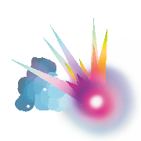
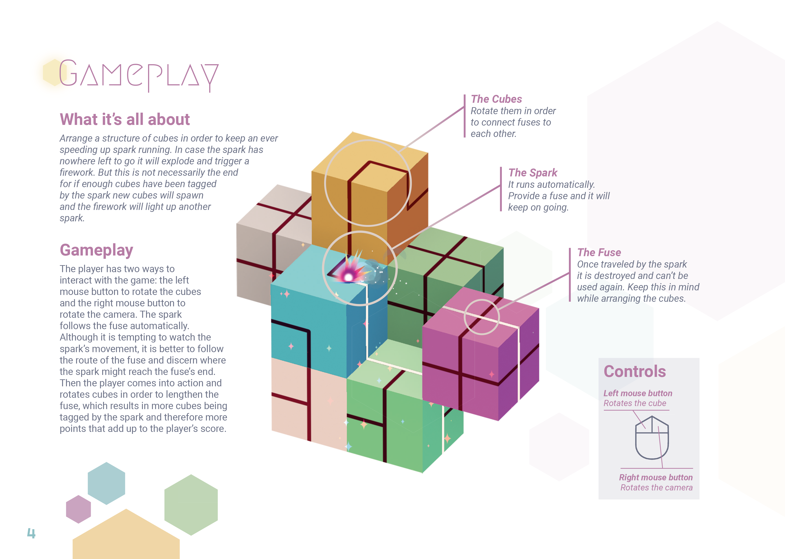

SCINTILA

Abstract
Scintila is an Endless Runner Game that demands spatial awareness
and the ability to plan ahead.
The player is tasked to rotate cubes around each other in
order to lay out a continuous line of fuses.
Arranging a path for the spark to burn is a challenge
already, but aiming for each cube’s maximum amount of
points at the same time is the real deal!

Details
Production
10/2018 - 01/2019
Time
4 months
Engine
Unity
Platform
PC
Team
Kristina Fitzner
Marlene Holly
David Vivas Estevao
Philipp Wagner
| Production | 10/2018 - 01/2019 |
| Time | 4 months |
| Engine | Unity |
| Platform | PC |
| Team | Kristina Fitzner Marlene Holly David Vivas Estevao Philipp Wagner |
Gameplay

My Learnings
- 3D camera navigation and movement
- Isometry and shading workarounds
- Using coroutines for transitional and timing purposes
- Procedurally generated level structures
Credits
Special Thanks to our coaches
Prof. Susanne Brandhorst and Prof. Thomas Bremer